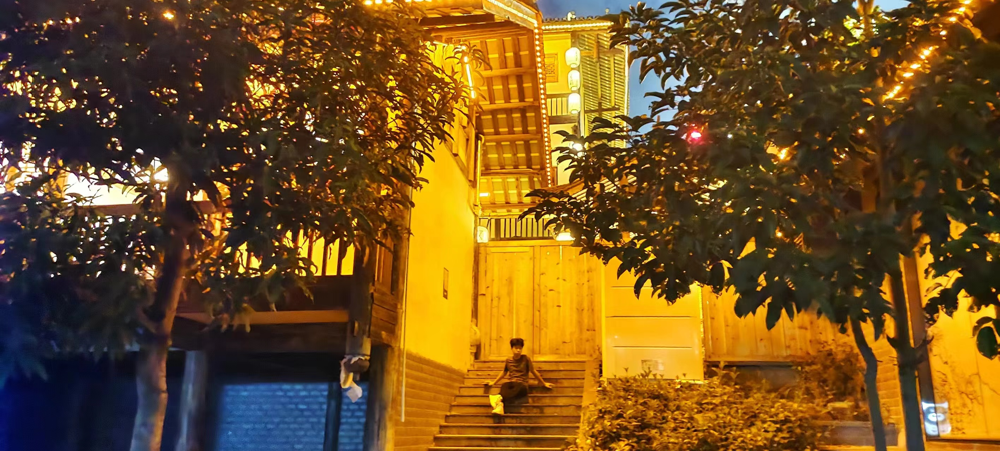

相思小镇介绍与娱乐项目：
相思小镇由56栋具有侗特色的建筑组成,采用广12个世居民族的文字、图腾、纹样、艺术、
节庆等民族元素进行园区氛围包装和空间场景打造,举办民族服饰体验、水上歌舞场景演绎、
贝侬戏台文化戏剧表演等文化主题活动,打造民族文化市集、文创文化馆、非遗特色街等。
相思小镇引进了多个品牌,涵盖文化艺术、非遗美食、社交餐饮、娱乐体验、生活配套、时尚零售、特色民宿、等业态,让游客有更满意的游玩体验。
小镇的各种亭台楼阁很适合拍古装照和民族照,旁边有古装商店,可租、可买、可旅拍。
满街的古装造型和打扮,吸引了不少旅客拍照打卡,仿佛穿越回古代。 步入相思小镇,仿佛穿越了时空,回到了古代的村落。
这里的建筑古朴典雅,错落有致地分布在山水之间。石板路、小桥流水、红灯笼、木格窗……每一个角落都透露出浓郁的古色古香。
沿着石板路漫步,五光十色的灯笼高高映衬着古朴的建筑,如梦如幻。此时此刻,仿佛置身于童话世界之中,令人陶醉。
南宁的相思小镇,是一个远离城市喧嚣,充满宁静与诗意的地方。小镇在青山绿水之间,以相思为主题,融合了壮、侗、苗等多个民族的文化元素,使这里成为一处人间仙境,
是远离城市喧嚣、亲近大自然的绝佳去处,让游客感受到浓厚的民族气息和原生态的乡村风貌。
个人体验：
1. 游览小镇：小镇内有许多古色古香的建筑，包括广西民居、侗族大歌堂等，可以漫步小镇，感受南宁的民族风情。
2. 参观民俗表演：晚上小镇内有许多民俗表演，包括广西民歌、侗族大歌、壮族舞蹈等，欣赏这些精彩的节目。
3. 体验手工艺：小镇内有许多手工艺作坊，在哪里体验制作广西特色工艺品，如坭兴陶、蜡染、刺绣等。
4. 品尝美食：小镇内有许多餐馆，供应广西特色美食，如桂林米粉、螺蛳粉、牛肉粉等十分美味。
5. 购物：小镇内有许多商店，我在那里购买了些广西特色商品如、手工艺品、纪念品。
